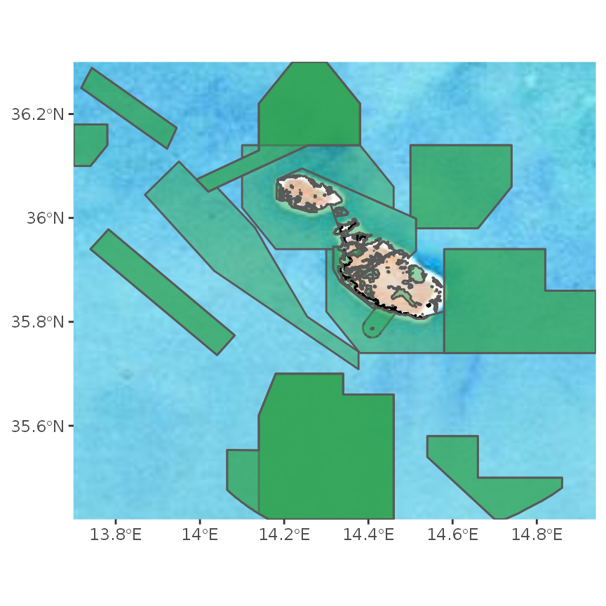
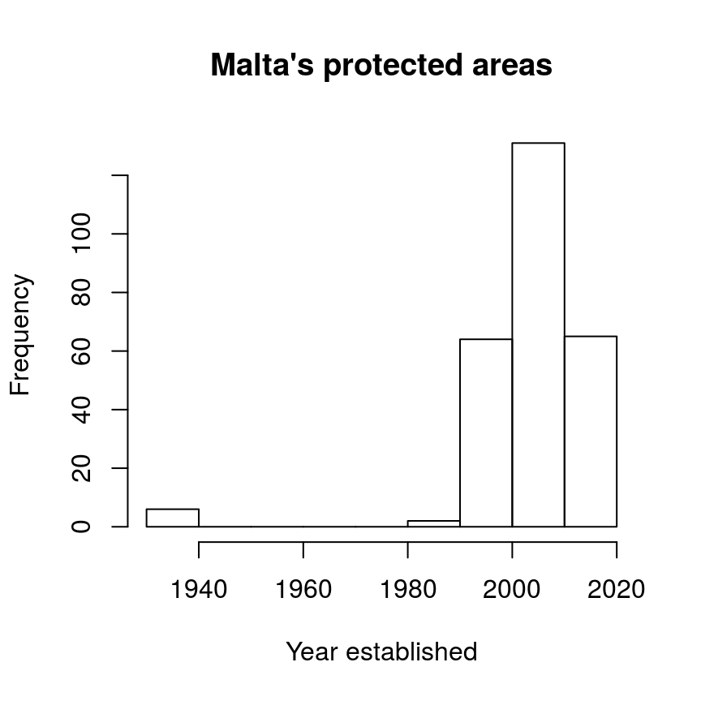
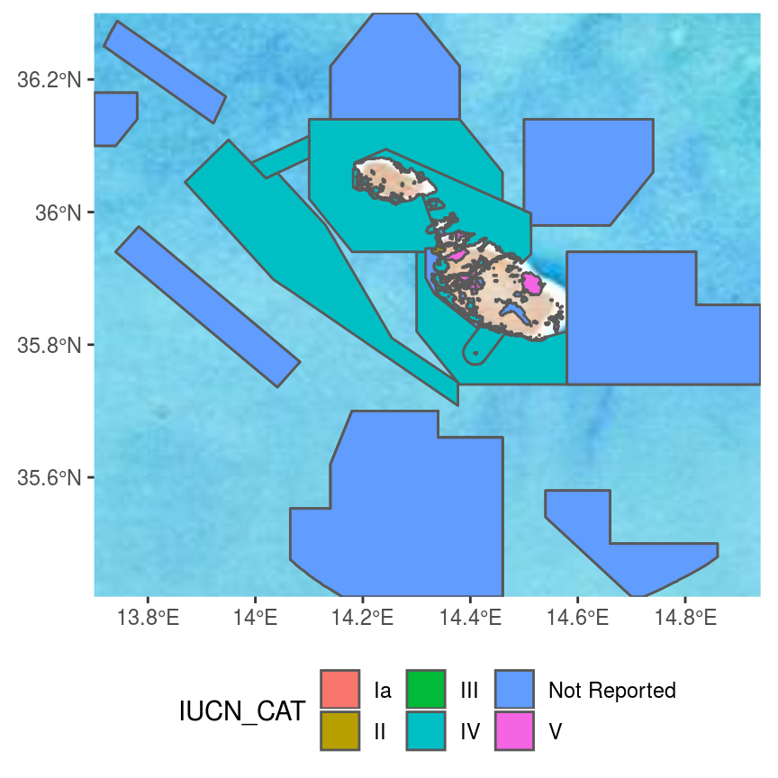

vignettes/wdpar.Rmd
wdpar.RmdProtected Planet provides the most comprehensive data for conservation areas worldwide. Specifically, it provides the World Database on Protected Areas (WDPA) and the World Database on Other Effective Area-Based Conservation Measures (WDOECM). These databases are used to monitor the performance of existing protected areas, and identify priority areas for future conservation efforts. Additionally, these databases receive monthly updates from government agencies and non-governmental organizations. However, they are associated with several issues that need to be addressed prior to analysis and the dynamic nature of these databases means that the entire data cleaning process needs to be repeated after obtaining a new version.
The wdpar R package provides an interface to data available on Protected Planet. Specifically, it can be used to automatically obtain data from the World Database on Protected Areas (WDPA) and the World Database on Other Effective Area-Based Conservation Measures (WDOECM). It also provides methods for cleaning data from these databases following best practices (outlined in Butchart et al. 2015; Protected Planet 2021; Runge et al. 2015). In this vignette, we provide a tutorial and recommendations for using the package.
Here we will provide a short introduction to the wdpar R package. First, we will load the wdpar R package. We will also load the dplyr and ggmap R packages to help explore the data.
Now we will download protected area data for Malta from Protected Planet. We can achieve this by specifying Malta’s country name (i.e. "Malta") or Malta’s ISO3 code (i.e. "MLT"). Since data are downloaded to a temporary directory by default, we will specify that the data should be downloaded to a persistent directory. This means that R won’t have to re-download the same dataset every time we restart our R session, and R can simply re-load previously downloaded datasets as needed.
# download protected area data for Malta
# (excluding areas represented as point localities)
mlt_raw_pa_data <- wdpa_fetch(
"Malta", wait = TRUE, download_dir = rappdirs::user_data_dir("wdpar")
)## Warning in wdpa_fetch("Malta", wait = TRUE, download_dir =
## rappdirs::user_data_dir("wdpar")): local data is out of date: Dec 2021Next, we will clean the data set. Briefly, the cleaning steps include: excluding protected areas that are not yet implemented, excluding protected areas with limited conservation value, replacing missing data codes (e.g. "0") with missing data values (i.e. NA), replacing protected areas represented as points with circular protected areas that correspond to their reported extent, repairing any topological issues with the geometries, and erasing overlapping areas. For more information, see wdpa_clean().
# clean Malta data
mlt_pa_data <- wdpa_clean(mlt_raw_pa_data)After cleaning the data set, we will perform an additional step that involves clipping the terrestrial protected areas to Malta’s coastline. Ideally, we would also clip the marine protected areas to Malta’s Exclusive Economic Zone (EEZ) but such data are not as easy to obtain on a per country basis (but see https://www.marineregions.org/eez.php)).
# download Malta boundary from Global Administrative Areas dataset
file_path <- tempfile(fileext = "rds")
download.file(
"https://biogeo.ucdavis.edu/data/gadm3.6/Rsf/gadm36_MLT_0_sf.rds",
file_path
)
# import Malta's boundary
mlt_boundary_data <- readRDS(file_path)
# repair any geometry issues, dissolve the border, reproject to same
# coordinate system as the protected area data, and repair the geometry again
mlt_boundary_data <-
mlt_boundary_data %>%
st_set_precision(1000) %>%
sf::st_make_valid() %>%
st_set_precision(1000) %>%
st_combine() %>%
st_union() %>%
st_set_precision(1000) %>%
sf::st_make_valid() %>%
st_transform(st_crs(mlt_pa_data)) %>%
sf::st_make_valid()## old-style crs object detected; please recreate object with a recent sf::st_crs()
## old-style crs object detected; please recreate object with a recent sf::st_crs()
## old-style crs object detected; please recreate object with a recent sf::st_crs()
# clip Malta's protected areas to the coastline
mlt_pa_data <-
mlt_pa_data %>%
filter(MARINE == "terrestrial") %>%
st_intersection(mlt_boundary_data) %>%
rbind(mlt_pa_data %>%
filter(MARINE == "marine") %>%
st_difference(mlt_boundary_data)) %>%
rbind(mlt_pa_data %>% filter(!MARINE %in% c("terrestrial", "marine")))## Warning: attribute variables are assumed to be spatially constant throughout all
## geometries
## Warning: attribute variables are assumed to be spatially constant throughout all
## geometries
# recalculate the area of each protected area
mlt_pa_data <-
mlt_pa_data %>%
mutate(AREA_KM2 = as.numeric(st_area(.)) * 1e-6)Now that we have finished cleaning the data, let’s preview the data. For more information on what these columns mean, please refer to the official manual (available in English, French, Spanish, and Russian).
# print first six rows of the data
head(mlt_pa_data)## Simple feature collection with 6 features and 32 fields
## Geometry type: GEOMETRY
## Dimension: XY
## Bounding box: xmin: 1382584 ymin: 4291797 xmax: 1399759 ymax: 4299407
## CRS: +proj=cea +lon_0=0 +lat_ts=30 +x_0=0 +y_0=0 +datum=WGS84 +ellps=WGS84 +units=m +no_defs
## # A tibble: 6 × 33
## WDPAID WDPA_PID PA_DEF NAME ORIG_NAME DESIG DESIG_ENG DESIG_TYPE IUCN_CAT
## <dbl> <chr> <chr> <chr> <chr> <chr> <chr> <chr> <chr>
## 1 555588631 555588631 PA Il-M… Il-Majji… Park… National… National II
## 2 174757 174757 PA Il-Ġ… Il-Ġonna… List… List of … National III
## 3 174758 174758 PA Bidn… Bidnija,… List… List of … National III
## 4 194415 194415 PA Il-Ġ… Il-Ġonna… List… List of … National III
## 5 194417 194417 PA Il-W… Il-Wied … List… List of … National III
## 6 194418 194418 PA Il-B… Il-Ballu… List… List of … National III
## # … with 24 more variables: INT_CRIT <chr>, MARINE <chr>, REP_M_AREA <dbl>,
## # GIS_M_AREA <dbl>, REP_AREA <dbl>, GIS_AREA <dbl>, NO_TAKE <chr>,
## # NO_TK_AREA <dbl>, STATUS <chr>, STATUS_YR <dbl>, GOV_TYPE <chr>,
## # OWN_TYPE <chr>, MANG_AUTH <chr>, MANG_PLAN <chr>, VERIF <chr>,
## # METADATAID <int>, SUB_LOC <chr>, PARENT_ISO <chr>, ISO3 <chr>,
## # SUPP_INFO <chr>, CONS_OBJ <chr>, GEOMETRY_TYPE <chr>, AREA_KM2 <dbl>,
## # geometry <GEOMETRY [m]>We will now reproject the data to longitude/latitude coordinates (EPSG:4326) for visualization purposes.
# reproject data
mlt_pa_data <- st_transform(mlt_pa_data, 4326)Next, we can plot a map showing the boundaries of Malta’s protected area system.
# download basemap for making the map
bg <- get_stamenmap(
unname(st_bbox(mlt_pa_data)), zoom = 8,
maptype = "watercolor", force = TRUE
)
# print map
ggmap(bg) +
geom_sf(data = mlt_pa_data, fill = "#31A35480", inherit.aes = FALSE) +
theme(axis.title = element_blank())
We can also create a histogram showing the year when each protected area was established.
hist(
mlt_pa_data$STATUS_YR,
main = "Malta's protected areas",
xlab = "Year established"
)
Now let’s calculate some statistics. We can calculate the total amount of land and ocean inside Malta’s protected area system (km2).
# calculate total amount of area inside protected areas (km^2)
statistic <-
mlt_pa_data %>%
as.data.frame() %>%
select(-geometry) %>%
group_by(MARINE) %>%
summarize(area_km = sum(AREA_KM2)) %>%
ungroup() %>%
arrange(desc(area_km))
# print statistic
print(statistic)## # A tibble: 3 × 2
## MARINE area_km
## <chr> <dbl>
## 1 marine 4790.
## 2 terrestrial 130.
## 3 partial 18.4We can also calculate the percentage of land inside its protected area system that are managed under different categories (i.e. using the protected area management categories defined by The International Union for Conservation of Nature).
# calculate percentage of land inside protected areas (km^2)
statistic <-
mlt_pa_data %>%
as.data.frame() %>%
select(-geometry) %>%
group_by(IUCN_CAT) %>%
summarize(area_km = sum(AREA_KM2)) %>%
ungroup() %>%
mutate(percentage = (area_km / sum(area_km)) * 100) %>%
arrange(desc(area_km))
# print statistic
print(statistic)## # A tibble: 7 × 3
## IUCN_CAT area_km percentage
## <chr> <dbl> <dbl>
## 1 IV 4244. 85.9
## 2 Not Reported 659. 13.3
## 3 V 33.2 0.672
## 4 II 2.43 0.0491
## 5 III 0.191 0.00387
## 6 Ia 0.145 0.00294
## 7 VI 0.0645 0.00131We can also plot a map showing Malta’s protected areas and color each area according to it’s management category.
ggmap(bg) +
geom_sf(aes(fill = IUCN_CAT), data = mlt_pa_data, inherit.aes = FALSE) +
theme(axis.title = element_blank(), legend.position = "bottom")
The wdpar R package can be used to clean large datasets assuming that sufficient computational resources and time are available. Indeed, it can clean data spanning large countries, multiple countries, and even the full global datatset. When processing the full global dataset, it is recommended to use a computer system with at least 32 GB RAM available and to allow for at least one full day for the data cleaning procedures to complete. It is also recommended to avoid using the computer system for any other tasks while the data cleaning procedures are being completed, because they are very computationally intensive. Additionally, when processing large datasets – and especially for the global dataset – it is strongly recommended to disable the procedure for erasing overlapping areas. This is because the built-in procedure for erasing overlaps is very time consuming when processing many protected areas, so that information on each protected area can be output (e.g. IUCN category, year established). Instead, when cleaning large datasets, it is recommended to run the data cleaning procedures with the procedure for erasing overlapping areas disabled (i.e. with erase_overlaps = FALSE). After the data cleaning procedures have completed, the protected area data can be manually dissolved to remove overlapping areas (e.g. using wdpa_dissolve()). For an example of these procedures, please see below.
# download protected area data for multiple of countries
## (i.e. Portugal, Spain, France)
raw_pa_data <-
c("PRT", "ESP", "FRA") %>%
lapply(wdpa_fetch, wait = TRUE,
download_dir = rappdirs::user_data_dir("wdpar")) %>%
bind_rows()
# clean protected area data (with procedure for erasing overlaps disabled)
full_pa_data <- wdpa_clean(raw_pa_data, erase_overlaps = FALSE)
# at this stage, the data could be filtered based on extra criteria (if needed)
## for example, we could subset the data to only include protected areas
## classified as IUCN category Ia or Ib
sub_pa_data <-
full_pa_data %>%
filter(IUCN_CAT %in% c("Ia", "Ib"))
# dissolve all geometries together (removing spatial overlaps)
pa_data <- wdpa_dissolve(sub_pa_data)
# preview data
print(pa_data)## Simple feature collection with 1 feature and 1 field
## Geometry type: MULTIPOLYGON
## Dimension: XY
## Bounding box: xmin: -3274101 ymin: 3403947 xmax: 879505 ymax: 5609364
## CRS: +proj=cea +lon_0=0 +lat_ts=30 +x_0=0 +y_0=0 +datum=WGS84 +ellps=WGS84 +units=m +no_defs
## Precision: 1500
## id geometry
## 1 1 MULTIPOLYGON (((-3267669 43...## 7859506269 [m^2]Although the World Database on Protected Areas (WDPA) is the most comprehensive global dataset, many datasets are available for specific countries or regions that do not require such extensive data cleaning procedures. As a consequence, it is often worth looking for alternative data sets when working at smaller geographic scales before considering the World Database on Protected Areas (WDPA). The list below outlines several alternative protected area datasets and information on where they can be obtained. If you know of any such datasets that are missing, please create an issue on the GitHub repository and we can add them to the list.
Please cite the wdpar R package and the relevant databases in publications. To see citation details, use the code:
citation("wdpar")